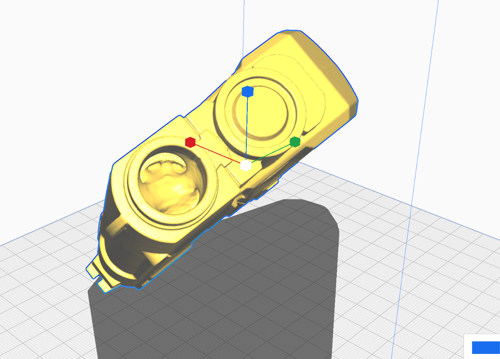
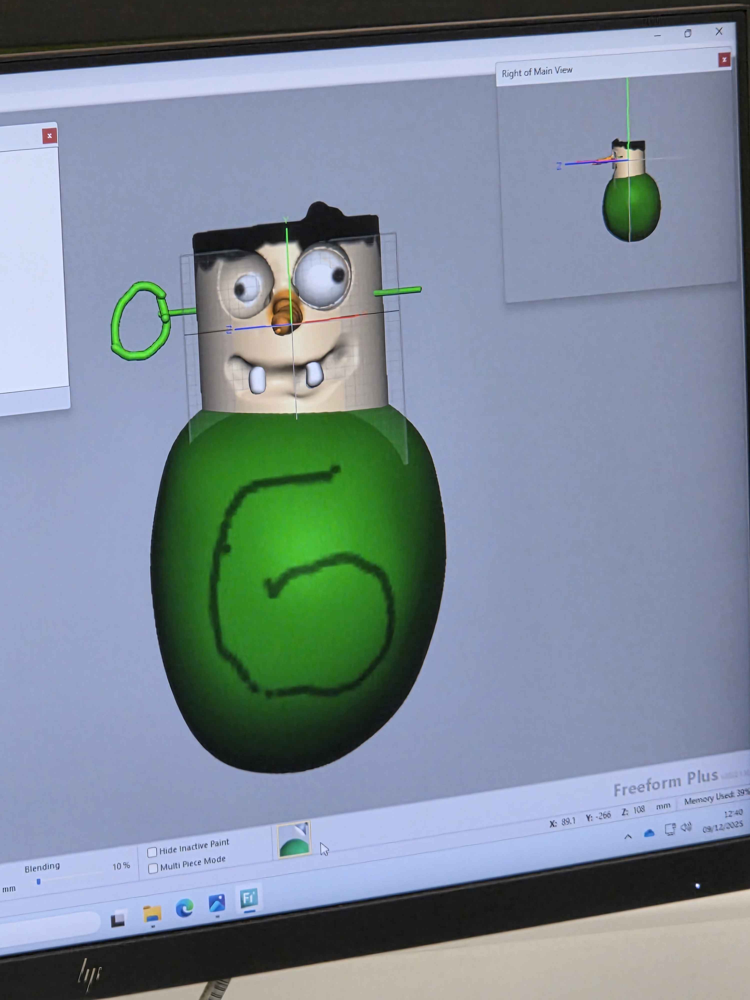

1. Introduction
Soapamorph is an animatronic soap dispenser prototype inspired by biomechanic horror aesthetics commonly associated in science fiction media, including films, games and themed entertainment environments. Whilst influenced by these styles, the final concept was intentionally designed into an original form to avoid direct replication of exiting copyrighted intellectual property.
The product is intended for installation within entertainment-based environments such as theme park attractions, escape rooms, immersive experiences and horror-themed facilities, where interactive products can enhance customer engagement and experience. The prototype focuses on visual impact alongside mechanical functionality, combining animatronic movement with practical hygiene applications.
The proposed mechanism operates through a sensor-activated system that detects movement or placement of a user’s hand. Once movement has been detected, an internal push mechanism extends the tongue/inner jaw assembly outward, whilst the external exoskeletal structure simultaneously lowers the lower jaw. After a short delay, liquid soap is dispensed onto the user’s hand before the mechanism retracts, returning the tongue and jaw assembly to its original closed position. This sequence was designed to create an immersive and theatrical interaction whilst maintaining the functional requirements of a commercial soap dispenser.
The project was developed collaboratively, with responsibilities distributed across multiple areas of the design and development process. This includes the base structure, mechanical system, exoskeletal frame, and a design skull supportive frame. The combined objective of these components was to produce a simulated, engaging animatronic whilst balancing aesthetics with functionality and reasonable manufacturing capabilities.
In addition to the development of the prototype itself, the project investigates a range of production methods, material properties, and manufacturing constraints associated with transforming a virtual design into a physical artefact. Particular consideration was given to material longevity, chemical resistance, water resistance, environmental considerations, and the feasibility of cost-effective batch or mass production methods suitable for future commercial development.
2. Background
The concept development of Soapamorph was heavily influenced by themed entertainment environments that utilise exaggerated visual design, animatronic movement features, and horror-based aestheticsto enhance user engagement and immersion. Inspiration was drawn from large-scale theme park attractions (such as Alton Towers and Madame Tussauds Wax Museum), interactive scare experiences and science fiction creature design commonly found within the entertainment industries.
A significant visual influence for the project was the H. R. Giger’s Xenomorph design from the Alien franchise. Particular inspiration was taken from the elongated cranial structure. Additional inspiration was also founded from the organic and bioengineered creature designs in the warhammer universe, specifically in relation to the cheek bones of the model. While these influences informed the overall visual appearance of the product, the final design was intentionally modified into an original appearance to avoid direct replication of copyrighted property.
The product was designed to function as either a wall-mounted or standalone soap dispensing unit positioned above a sink, similiarly to public hygiene dispensers commonly found in entertainment venues or amusement facilities. Existing themed hygiene installations such as decorative sink and dispenser units within major theme parks and farm/zoo parks demonstrate how bathroom products can also contribute towards immersive environmental experiences. An example of this approach can be observed in Disneyland such as the Donald Duck sink unit.

The project combines practical functionality with animatronic interaction to create a product that operates as both a hygiene appliance and a themed entertainment feature. This combination provided an opportunity to investigate how digital design methods are used, mechanical systems are created, and how prototyping techniques can be integrated within a product development process within a team, within a real-time industry experience.
The aim of this project was to design, simulate and prototype an animatronic soap dispenser using digital design and prototyping techniques explored throughout the module, while critically evaluating the effectiveness, suitability, and limitations of these techniques withint the context of the project product development and physical prototyping.
4. Objectives
- Develop a 2D Concept Design to establish overall visual direction of the product.
- Produce a 3D Digital Preliminary Design using Computer Aided Design.
- Design a functional Jaw and Tongue movement mechanism.
- Evaluate suitable materials for long-term exposure to target environment (water, steam and soap).
- Assess suitability of production methods for large or small-scale manufacturing.
- Critically evaluate the production methods and techniques explored inside the module and justify use or disuse of them.
- Demonstrate with either a physical demonstration or simulated demonstration, a working prototype mechanism on the model.
- Finalise portfolio showing all contributed work towards the project.
- Reflect on work, limitations and future improvements.
5. Target Clients
5.1. Novelty and Home Décor.
Soapamorph was designed mostly to appeal to entertainment or engagement facilities, however, there may be a market for consumers interested in novelty products, collectables and unconventional interior decoration. The exaggerated biomechanical aesthetic allows the product to function not only as a practical hygiene device, but also as a display piece suited to themed out homes/rooms, gaming themed rooms for example or even as an alternative home decoration for someone who likes to collect unusual products. Celeberaties for example collect many unique items that might not be to everyones taste, for example Stephen Morris the Joy Division Drummer likes to collect life-sized doctor who memorabilia, this includes some original Darleks according to lifestyle fortress "https://lifestylefortress.com/the-most-bizarre-things-celebrities-collect/".
5.2. Entertainment Industry.
The groups main target includes the entertainment industry which can include theme parks, horror attractions, escape rooms and immersive experience centers. Within these environments industries have interactive props, animatronic features and interactive, engaging experiences throughout their facilities. All of which are commonly used to increase customer engagement, customer revenue and enhance environmental immersion. Soapamorph was therefore designed to provide both practical functionality and theatrical interaction suitable for themed installation.
6. Methods of Production
Design
During the early stages of development, the group conducted a collaborative meeting to discuss potential themes, design concepts and a project theme that would be both technically achievable and creatively engaging. Multiple ideas were proposed and evaluated based on their visual impact, mechanical feasibility and production methods.
IDEA'S PRESENTED
WindmillDroneBandOctopusButterflyJurassic Park Dinosaur (own original version non-copyrighted)- Xenomorph from the franchise Aliens(own original version non-copyrighted)
The group ultimately chose inspiration from the creature Xenomorph from the Aliens H. R. Giger’s franchise https://academic.oup.com/book/45696/chapter-abstract/398101313?redirectedFrom=fulltext
This early decision established a clear visual direction for the project whilst also providing opportunities to investivate a range of digital and practical design and manufacting development processes.
6.1. Blender - Computer Aided Design - Used.
Blender is a free open-sourced Computer Aided Design (commonly called CAD), software platform that is used in modelling, animation, rendering and video editing. It's the software is widely utilised by artists, hobbists, designers, animators, engineers and some games development due to its accesibility and variety of capabilities. Blender is capable of helping designers made 3D models, visual effects and also video animations.
The group decided to utilise Blender as the primary software for developing the external skull and spine structure, and overall aesthetic design of the product. The software was selected due to its ability to produce highly detailed organic surface modelling, which was considered essential for achieving a more realistic biomechanical horror appearance. Compared to more engineering focused CAD, (Computer Aided Design), platforms, Blender provided greater flexibility when producing complex surface geometry, scuplted forms, and refined visual detailing.
With the use of Blender the group was able to rapidly iterate design variations, duplicate backups, adjust proportions and refine surface features whilst decimating the polycount for easier less confusing prints. This improved efficency during the Preliminary Design Phase. Whilst the group had access to AutoCAD and Fusion 360 platforms, Blender provided a more artistic and functional method of design allowing extra detailing between lines, verticies and sections, to create a more realistic model.
Advantages:
- Open Source: Blender is open source and freely available with or without student discount so accessibility was a lot easier.
- Complex Modelling Capabilities: Blender is able to handle more complex intricate designs, Blender has been commonly used in animation, scenery modelling, some games development models and hobbists making detailed DIY products with designs.
- Rapid Iteration: The software allows modification of meshes, proportions and surface features making refinement much easier in detailed sculpts or design methods.
- Extensions: Blender allows accesibility to extensions to help workflow and identify product errors before prints. Such as the 3D printing extension, it can identify poor geometry, loose geometry or even poor connections and offers an automated fix option for times where every other method has failed.
- Compatibility with 3D printing: Easy to use with cura or any slicer. DIY 3D printing hobbists use blender for this reason.
Disadvantages and limitations:
- Not beginner friendly: A main disadvantage of using Blender is its steep learning curve, particularly for users with limited previous experience in Computer Aided Design. Due to the extensive range of tools and functions integrated within the software, new users may initially find the interface overwhelming and complex. Blender provides numerous methods which include, scuplting, texturing, rigging, animation, rendering, geometry editing, boolean, array, and simulation tools, all of which require time, patience and practice to develop proficiency.
- Limited Engineering Precision: Although Blender can be used to model mechanical parts, it does lack some advanced assembly, tolerance and constaint tools available in AutoCAD and Fusion 360. Designing functional components or mechanisms can be even more time consuming on Blender compared to AutoCAD and Fusion 360 because of the lack of precision and even when completing the model they can still be less accurate than CAD platforms specially designed for mechanics and components. Blender to the best of it's ability is best to be used for unpredictable, unprecise modelling, where modelling is design and visual focused.
- Topology and Mesh complexity and issues: Using Blender makes detailed models easier to generate dense geometry or irregular mesh topology the more you alter your model. This can create difficulties when it comes to 3D printing. This also makes it difficult for mass manufacturing if models need to constantly be altered, you would need to keep saving backups of each stage of the model to go back onto. This also means that there is always additional cleanup before finalising a model, this can include cleaning up inverted geometry, hollow sections or holes, loose geometry and so on. Many designers rely on Extensions to make it easier for them when it comes to cleaning up their models.
- Assembly and mechanical assembly difficulties: Although you can make individual components to a model, assembly especially mechanical assembly can prove to be challenging as Blender was not equipped to handle precise advanced constraint and tolerance analysis. To assemble models or components together that have movement, more time is consumed in altering the models which don't always gurantee an accurate precise measurement or gap between joints.
- Not suitable for manufacturing design documentation: Blender focuses on visual design modelling rather than engineering communicated documents found on blueprints, precise specifications will be too complex to handle on Blender and would better be used on CAD platforms such as Fusion 360 or AutoCAD platforms which are more equipped to handle specific requirements and assembly sizing.
6.2. 3D scanning - Used.
3D scanning is a digital process of using computer vision to capture, shape dimensions and appearance of physical objects or environments to make a precise digital replica. Unlike traditional methods with 2D photography which can only capture height and width , 3D scanning is capable of recording depth, surface detail and color as well. The process utilises sensors, lasers and structured light systems to measure distances and surface geometry. This information is then processed through computer vision software, which converts captured data points into polygon mesh or digital 3D models.
The decision to ultilise the 3D scanning resources was primarily influenced by project time constraints and efficency. By scanning an existing hgihly detailed ornament, the group was able to rapidly create a complex base model which significantly reduced modelling time required for manual modelling. This approach accelerated the development process while still allowing detailed surface geometry.
Advantages
- Quick capture of object geometry and convert it into a digital 3D model. Saving time compared the traditional manual approaches within Computer Aided Design software. Reduces development time especially early on the project development.
- Effective shape transistioning: 3D scanning is effective when capturing irregular angles, detail and surface proportions that in traditional CAD methods would not only be difficult to achieve but would be more time consuming.
- Supports reverse engineering: existing components or surfaces can be scanned and analysed for redesign purposes, modification or reproduction.
Disadvantages & limitations
- Poor Accuracy on details that have small depth or over a certain angled corner.
- Poor Accuracy on reflective surfaces due to the laser beams bouncing back creating uneven or disproportional/ distorted surface geometry. Additional surface alterations and lighting conditions can aid this however, not all models will come out perfecly dependant on how much reflection was on the model. A good example of this would be a NAMCO light gun from the PlayStation 1, that a student brought in for the 3D scanning workshop throughout out module sessions. 99.8% of the light gun scanned with no difficutlies however when it came to the tip of the gun where the light beam is present and a reflective screen over it, you can see the 3d scan struggled and some deterioration is found in the main model.
- Post-Processing Requirements: Scanned models usually contain unwanted geometry. Lines that do not conenct to other verticies or random veticies around the model. Holes that need to be filled. Or surface irregularities. This requires another CAD platform suitable to handle 3D scanning converted digital models, and delete, cut and reshape the model to the users needs. This can be time consuming the more detailed the model is and the more geometry and polycounts a user has to work with.

6.3. Autodesk Fusion 360 - Computer Aided Design - Used
The decision to use Autodesk Fusion 360 was influenced by its ability to provide precise parametric modelling tools, mechanical assembly features and simulation capabilities for mechanical assembly features. Autodesk Fusion 360 has commonly been used in CAD component production as it provides precise measurements, capabilities to join connective components and simulate to check all parts of the components work in unison.
Advantages
- Precision and accuracy: Autodesk 360 has the ability to produce high accurate specifications and high quality components. It has many tools that can break down a model to its dimensions, tolerances and assembly relationships which can be precisely controlled to customise, adjust and alter pre-existing and post design mechanical components.
- Parametric modelling: This software allows parametric workflow, (parameters like dimensions, tolerances and constraints), which means it can allow dimensions and features to be modified without having to change the whole entire model or start from the beginning.
- Professional engineering manufaturing: Fusion 360 is effective at making specific detailed documentation for engineering mechanical blueprints. Making it widely used alongside many other AutoCAD software in engineering design.
Disadvantages& limitations/h4>
- Difficulties in making a detailed model: Although fusion 360 supports surface modelling, for models that require more detail users would struggle as it is not specialised for scuplting or detailing certain design features a more detailed model would require.
- Not beginner friendly: Although Fusion 360 is less complex than a lot of CAD software platforms, users still need a technical understanding to effectively utilise its complex, advanced features.
- Performance limitations: As complexity of a model increases, software performance may drop due to large numbers of detailed surfaces or moving components. High polygon counts and complex assemblies can increase rendering and processing times which can make the software start to delay/lag.
6.4. Motion Capture - Unused.
Commonly reffered to as MoCap, motion capture is a process where a digital recording is used to capture and translate real-world human, animal or object movements into digital animation data. The process involves cameras stationed around a target area (studio floor), infered tracking systems, reflective markers and sensor-based suits. The captured data is then applied to a digital model using animation techniques, putting bone structures internally into the model and then using playback features. Commonly motion capture is used wihtin robotics, animation studios, games development, virtual advertisements or virtual environment entertainment.
The group had decided that MoCap was not really the direction the project should go due to the fact only two coordinated points of movement would be used and for small-scale movement it was unneccessery towards what we needed. It would have added more time constraints, more complexity and would not have been flexible to the projects testing needs.
Advantages
- Realistic movement production: One of its major highlights is to get realistic real-time movement sequences which can replace older traditional animation techniques that are time consuming, making project development much more entertaining and reducing development time.
- Efficient animation workflow: Animations are much smoother to work with due to preanimated gestures and sequence based workflow. Instead of individually creating movements frame by frame you are working with real-time recorded actions to utilise into models.
Disadvantages & limitations
- Expensive: A professional MoCap setup would require not only a studio, requiring sensors, cameras and markers but the individual wearable bodysuits alone are expensive. This makes it difficult to invest with smaller-scale projects especially when you have to consider environmental controlls.
- Complex data processing: After a MoCap session often there is a complex process of cleaning up captures and putting them into sequences. This can be time consuming and requires some techical knowledge or background to understand all of the tools required for the process.
- For simple mechanisms there is limited relevance for use of MoCap. Especially when it would be much easier and cheaper to use an open source platform or AutoCAD.
- Reduced flexability: Many MoCap systems require certain environmental conditions, lighting and controlled capture spaces. This can heavily reduce flexibility especially for small-scale projects during texting and production.
6.5. Haptic Scuplting - Unused.
Haptic Scuplting is digital modelling process that combines 3D sculpting software with force-feedback (touch) to simulate physical sensations of sculpting as though you were actually drawing onto a surface. Unlike traditional CAD platforms that rely on geometric and parametric modelling, haptic sculpting allows designers to manipulate digital surfaces in a more tactile and artistic manner. This can replicate working with clay for example. The technology is commonly used within entertainment, character sculpting, creature development detailling, and concept art.
It was decided very early on the project that the haptic pen was not a route the project needed to go down. Mainly because it takes background knowledge on how to work its complex array of tools but also because it requires a more artistic hand to sculpt, which non of the team members had mentioned they felt they comfortably had.
Advantages
- Natural workflow: similar to designers benefitting from tablets to do digital art designs, the haptic tool offers that same realistic workflow as though you are working with pen and paper, making it more natural for someone with artistic talents to take advantage of.
- High surface detail: With any sculpting platforms comes with high detail, perfect for designing or modelling creatures for example. Facial appearences can be detailed, like rough skin surface textures for example.
Disadvantages & limitations
The main disadvantage the haptic pen concerns is that a high artistic skill is required to create and sculpt models with high-quality results. This also requires someone with sculptural understanding, anatomy knowledge and practice with artistic digital platforms.
Extreme limited mechanical precision.
Expensive Hardware and Software: for independant projects the hardware and software can be costly, and in Educational environments they are hard to find funded. Making them less flexible to work with development process and too expensive to learn.

Production
6.6. 3D Printing - Used.
3D printing has become very popular for its ease of access by many CAD and slicer software platforms, and for prototyping affordability.It is a production method that creates objects layer by layer from a 3D digital model, often with plastic filament however you can also get clay and metal. It has widely become useful in prototyping artefacts for design, engineering, healthcare, architecture and entertainment. Even now NASA are experimenting with 3D printed tools being manufactured in space to reduce weight on launch. https://www.nasa.gov/missions/station/iss-research/3d-printing-saving-weight-and-space-at-launch/
3D printing was one of the primary manufacturing methods used for the Soapamorph due to budget constraints, lack of resources, ease of use and also ease of learning and experience. It also offered many practical uses such as print in place function for more complex areas of the design, printing supports so that the model had a smoother surface start-point layout and its autonomous features allowed the project to be produced whilst focusing on another part of the projects development stages.
Advantages
- Autonomous production.
- Accessibilty: 3D printers can handle models from almost all CAD software platforms, making it easier to use and accessible.
- Low machine costs: unlike processes like injection moulding which can be expensive based on environmental needs, tools and machine upkeep, additive manufacturing (3D printing) doesn't require expensive moulds or tools during production. It also does not require a complete change like injection moulding where you have to change designs and tools around, which can be time consuming, 3D printing allows digital SD card input to keep files on and can be printed at ease anytime without having to change over complex tools.
- Components can be modified easier digitally and inputed into the machine whilst keeping multiple files on the same SD card. Meaning you can keep multiple designs in one place and also backups of changed files.
- Compared to CNC processing, additive manufacturing uses less waste as it prints material where required. Making it slightly environmentally friendly in waste reduction.
Disadvantages & limitations
- Visible seam layers: 3D printers print layer by layer so the layers are visible, most of all designers have to arrange the print settings often especially when they are switching material of filament. There is no way of getting rid of the seams but there are methods to make the seams less visible or noticible for example, the start seam that can show a horizontal line down a model, but settings can be changed if the model has an inner area for the seam to start there instead making the outside less noticable.
- Limited material performance: certain materials lack the ability to withstand heat, UV rays, water, chemical and impact resistance. Depending on what a prototype is needed for certain requirements might not be met in one material.
- Poor Geometry in models can cause prints to keep printing unchecked causing massive wastage of materials.
- Slow production method: Although it provides autonomousy, to get prints to come out well most machines need to start off with a speed of 10-30% depending on detail, and after a few layers the speed can increase. This makes this production method time consuming, often taking days when it comes to larger models.
- Structural weaknesses between layers can provide weak gaps when impacts can bounce energy through shattering the polymer bonds, making it less likely to have a long shelf life.
6.7. Resin - Unused.
Resin production and manufacturing is a process used to create durable, lightweight and highly detailed models or components through the use of moulds or dip forming structures. These processes are highly used in Automotive, Aerospace, Prop/Movie Production, Animatronics, and theme park entertainment industries. This is because of the ability to produce detailed, high-quality surface finishes.
The soapamorph project initially explored the possibility of Resin as it provided a method to fully utilise high-design quality, and its ability for transparent colors to give a more alien, slime, visual effect. However, because of how expensive resin can be, especially larger scale like this project, the group looked to alternative production methods to allow bugetting for the entire project not just a singular component or piece.
Advantages
- High-Surface Quality: This is a major advantage of Resin production, as Resin casting has the ability to achieve fine detail reproduction without compromising quality surface finishes. Unlike 3D printing where you can see seams, Resin is a form of mould casting, or dip casting and UV lighting which is what helps give it a smooth finish.
- Improved material ability: Resin can provide a more durable material that can be water resistant, and provide structural strength as it is not a form of grid printing such as 3D printing. Because of its stronger material capabilities it is able to have a longer shelf life compared.
- Lightweight structures.
- Suitable for batch production methods.
Disadvantages & limitations
- Expense: Due to moulds, Tooling, chemicals, and design revisions between prints.
- Resin Ratio Complexity: Whether working with moulds or dip machines, the ratio between how much hardener per how much Resin is mixed together can complicate prints, UV solidify techniques, or DIY dry techniques. If the Ratio is off, it can cause a failed model sometimes instantly but most times months later when deterioration starts to form. The ratio can add more complexity in the form of the side of model or the purpose of the model. DIY hobbists can use a ratio of one part equal resin and one part equal hardener. More industrial production methods may include two part equal resin for every one part hardener. Some specialised resin models can involve 3:1 Ratios up to 5:1. Each Ratio is determined by the specific product needs.
- Material Waste: Resin methods can generate significant waste during trimming, support removal and failed casting attempts.
- Health and Safety Concerns: Resin produces more airborne particles during the manufacturing process which are toxic to respiratory systems. External shelters are needed which can cost extra, or on larger industrial machines a filtering system is required. Long term exposure can cause health risks and in some cases long-term respiratory diseases.
6.8. Composite Production - Silicone - Unused.
Silicone manufacturing techniques used to make durable and lightweight components without sacrificing high detail. It is commonly used in animatronics, film and prop production, prosthetics, aerospace, automotive engineering and theme park entertainment industries. Often used when products require a more realistic appeal, or lightweight covering. Silicone is a synthetic polymer that is widely known for its flexibility, hydrophobic, chemical resitance and durability capabilities.
The production process involves a sacrificial model or preset mould that represents the final ideal shape. Liquid silicone is mixed with curing agents before being poured or brushed into the mould cavity. After curing the silicone is removed, trimmed and undergoes a finishing process.
During the very early stages of planning, the soapamorph project was intended to have a silicone skin, for hygiene requirements (ease to keep clean), and that the Artefact needed to be Water Resistant, Chemical Resistant and finally heat resistant due to the environment it was to be installed in. However, due to expense, resource limitations and time constraints this was soon abandoned for PP (Polypropylene) 3D printing methods instead.
Advantages
- Water and chemical resistance: Silicone has strong hydrophobic and chemical-resistant properties, making them highly suitable for exposure to environments with high exposure and humid weather.
- Realistic apperance: Detailed models do not lose their details during process as it provides a high quality surface finish.
- Improved durability -> impact resistance -> longer shelf life.
- Lightweight.
Disadvantages & limitations
- Complex manufacturing processes: Silicone manufacturing takes multiple stages including, mould making, curing, trimming and finishing. This increases production time length.
- Difficult deisng changes: Unline 3D printing, modifying components requires a complete new mould to be produced and then extending both time and expenses into changes.
- Safety Requirements: The need for specialised tools and ventilation systems as the process can produce harmful airborne particles.
- Increased material waste: Due to a batch need to be used as soon as possible after it is opened, storage can cause liquid silicone mixtures to get old and unusable. Increased costs at failed casts, trimming and mould production.
6.9. Laser Cutting - Unused.
Laser cutting is a process of using concentrated high-powered laser beams to cut, engrave or etch materials with high precision. Widely used in engineering, architecture, product design and fabrication due to its speed, ease of use, accuracy and autonomous capabilities.
Materials available to the project involved wood, acrylic, cardboard, paper, fabric and authorised metals provided on site. At the very beginning laser cutting was a consideration, unfortunately due to complications with models and adjustment needs, this project became time constricted and instead laser cutting was dismissed from the manufacturing schedule for wood working techniques.
Advantages
- High Precision
- Low material waste: laser can be calibrated to start on one end of the material and carry out its program.
- Cost effective.
Disadvantages & limitations
- Limited to flat surfaces.
- Risk of burn marks and edge discoloration dependant on material tolerance.
- Material thickness limitations dependant on machine power.
- Specialised tools needed to rotate material for rounded or curved engravings.
- Fire hazard: Technical background knowledge needed to operate industrial machines due to complexities in material structure, tolerances and air filtering requirements.
Bonus Production
Woodworking.
Woodworking is a traditional method of production involving shaping, cutting, joining and finishing of timber based materials. Despite its age woodworking still continues to be a massive manufacturing method commonly in furniture, architecture, construction, and prototype product development.
This type of manufacturing was a bonus added onto the project for the base design. Due to laser cutting being inaccesible under the time and budget constraints, a prototype wooden frame was cut and assembled, ready to be coated in wood oil to help with water resistance. Future manufacturing would stick however with laser cutting for fine precision and speed.
Advantages
- Full control of assembly.
- Test parts before permanent assembly.
- Structural strength.
- Cheap and simple tool requirements.
- Simple work space required - Not necessery for a lab or workshop meaning time is more flexible around needs.
- Environmentally more sustainable, low fumes, longer shelf life, recycable properties.
Disadvantages & limitations
- Moisture exposure can cause it to mould. Requires coating with wood oil for water resistance.
- Surface finishing requirements for longer lasting.
- Lower precision compared to autonomous cutting.
- Assembly joints/ nails measured and additonal elements to help keep in place such as rawplugs etc...
7.Materials Research
Material Goals.
This project has ideal requirements for the properties of the materials used.
Material Science Breakdown
Must have properties:- Constraint 1 - Hydrophobic (good, excellent - water & steam).
- Constraint 2 - Chemical Resistance (fair, good - soap).
Objective Limit:
- Minimise Cost/ Cost efficient.


As can be seen on the graphs above, with or without recycling considerations the best printing material used for this project would be PP (Polypropylene) based on its affordability, its water resistance properties and its chemical resistance to low Alkilis such as soap.
Materials Available to the Project - Printing.
The project focused entirely on printing methods due to complications with models such as constant errors needing to be adjusted and postponing time of production, availability issues with certain labs and limited resources available.
Silicone.
Polysiloxane polymer - (-Si-O-Si)n
Silicon - oxygen chain.
Pros:
- Hydrophobic
- Flexible/elastic
- High temperature resistance
- Chemically stable
Cons:
- Expensive
- Tears easier than thermoplastics
- Harder to recycle
- Can swell when exposed to certain solvents(oil)
- Produces airborne fumes that can be hazardous to health.
TPU.
Thermoplastic Polyurethane
Pros:
- Tough.
- Abrasion resistant.
- Flexible.
- Good impact resistance.
- Tear resistance.
- Solvant resistance to oils.
Cons:
- Expensive.
- Absorb moisture.
- Not a great UV resistance.
- Harder to print - also requires specific heat and print bed.
PP
(Polypropylene)
(-CH2-CH(CH3)-)n
Pros:
- Cheap
- Excellent chemical resistance.
- Hydrophobic.
- Good impact resistance.
- Good moisture resistance.
Cons:
- Poor UV resistance.
- Can warp easier during print. Requires G10 bed or taping on build plate to help stick.
- Difficult to paint.
- Lower heat resistance compared to other polymers.
PLA
Polyactic Acid
(-C3H4O2-)n
Pros:
- Easy to print
- Cheap
- Moderate print detail.
- Low warping during prints.
Cons:
- Brittle.
- Poor heat resistance.
- Poor long-term moisture resistance.
- Low chemical resistance.
- Degrades over time.
Resin
Pros:
- Extremely high detail in prints or moulds.
- Smooth surface finishes.
- Good for prototypes, ornaments or projects.
Cons:
- Brittle.
- UV degration over time.
- Low impact resistence.
- Can potentially be exposed to subsurface cracks or surface cracks over time.
- Produces airborne fumes that can be hazardous to health.
ABS
Acrylonitrile Butadiene Styrene.
Chemically made from Acrylonitrile, Butadiene, and Styrene.
Pros:
- Very tough.
- Good Machinability.
- Excellent impact resistance.
- Easy injection moulding.
- Widely used in many engineering plastics.
Cons:
- Poor UV resistance.
- Not Chemical resistant.
- Warps during the printing process - can cause prints to fail.
- Produces airborne fumes that can be hazardous to health.
PET
Polyethylene Terephthalate
Polyster made from Ethylene glycol and Terephthalic acid.
(-O-CH2-CH2-O-CO-C6H4-CO-)n
Pros:
- Good chemical resistance.
- Strong.
- Recycable.
- Good moisture resistance.
- Excellent barrier properties as it is used in bottles.
Cons:
- Absorbs moisture before processing - can make it brittle.
- Low heat resistance.
- Brittle compared to polymers like ABS and TPU.
- Can crystalise during processing which can complicate printing.
- Harder to print than PLA - requires specific heats and conditions.
PETG
Polyethylene Terephthalate Glycol.
Modified PET with glycol to reduce crystallization.
Pros:
- Tougher than PLA.
- Easier to print than ABS.
- Good chemical resistance.
- Good transparency.
- Better impact resistance compared to PLA
Cons:
- Scratches easily.
- Can string and fail during prints easily.
- Moderate moisture sensitivity.
- Less heat resistance than some plastics.
Project Materials Choice
Start of Project Plans.
After extensive research, the project direction for materials decided upon are as follows:
- Skull, Skull Lid, Lower Jaw, Inner tongue/Jaw, Spine and pipes will be done in PP, in case Silicone is a resource that is out of reach. These two were decided base on environmental concerns addressed above.
- The group investigated the potential of laser cut acrylic for the base however at this point are undecided.
- The mechanism will be the same material as the base modelled skull to provide a stronger material and address concerns with the environment.
Mid-Project.
With the base changing a material is still unconfirmed during this timespan. The skull model is proceeding to plan with PP. The mechanism is proceeding to plan.
End of Project.
Due to error corrections, time constraints and lack of resources that ended up being available. Changes to the materials we're made just to get a working prototype out, future production of this prototype will be in the materials selected previously, as in practical uses in the environment it is being placed in that was the most suitable, affordable and environmental friendly choice out of the printable and mouldable materials in the labs.
- Skull, Skull Lid, Lower Jaw, Inner tongue/Jaw, Spine and pipes: Now printed in PLA due to a previous print failure due to old worn out filament. A new supply delivered would take longer than the module therefore as a result a prototype, for the prototype was decided.
- Base: Constructed from MDF wood, and Plywood. Also due to time constraints and resource constraints. The group investigated donated/ free wood from a local DIY/hardware retail facility, to which was then used as a last minute resort to get a functioning base.
- Mechanism: With the same issues as the skull, the mechanism also was 3D printed with PLA just to demonstrate a working mechanism.
8.Environmental Stability / Eco Approaches
Recycability, longevity and Environmental Impact
Silicone:
Silicone is durable, long-lasting, reducing replacement waste which can make it more economically friendly, however at the end of its life it is difficult to recycle and does not biodegrate naturally. When it is chemically produced, it can reliease industrial emissions during chemical processing.
TPU:
Is flexable and durable with some recyclable properties, however it is petroleum-based and can contribute to microplastic pollution if not disposed of safely.
PP (Polypropylene):
Is widely recycable and has a very long lifespan, making it more economically friendly through efficiency and reliability despite being patroleum-based.
PLA:
PLA is a biodegradable bioplastic from renewable resources like corn starch. This makes it more environmentally friendly than most plastics, although it requires industrial compositing conditions to properly decompose. Also with rising popularity in 3D printing hobbists, PLA recycling has increased, questioning how much more economically friendly it is statistically compared to other plastics as industrial production and transport still give carbon emissions.
Resin:
Generally Resin is difficult to recycle, and produce excess waste during moulding or printing. Releasing harmful airborne particles. This makes Resin one of the least environmentally friendly materials.
ABS
ABS is durable, and it is recycable but it is petroleum-based and releases higher emissions compared to other thermoplastics.
PET
PET is highly recycable and is commonly used in consumer bottles, packaging and kitchenware products. Its makes it one of the more sustainable plastics, but only if effective recycling systems are in place and facilities are within distance.
PETG:
Combines durability with recyclability. Though it still releases harmful emissions, it is less than ABS. Although it still remains patroleum-based, and can only be recycled effectively if a local system and facility are in place.
Longer lasting products can sometimes be more evironmentally beneficial than a biodegradable product requiring frequent replacements. Which is why PP was chosen over PLA, even though they are both cheap to use in production, the group chose a more sustainable and environmentally friendly resolution for the end of life concerns once the project had passed its useable or desirable needs.
Reflection
Setbacks and Resolutions.
One of the major challenges encountered throught the development of Soapamorph was time management and project scheduling. Although an initial gantt chart and development plan were produced, the project underestimated the amount of time required for iterative design refinement and did not account for potential errors. In retrospect, the 3D manufacturing stage should have begun significantly earlier within the project timeline, ideally during early April rather than May, to allow sufficient time for failed prints, design revisions and assembly adjustments.
The project failed to fully account for the liklihood of design errors and prototype timeline production requirements. As the product became more complex, additional time was required to resolve issues involving tolerances, movement restrictions and structural weaknesses. This progressively reduced the amount of time available for later production stages and limited the ability to fully complete the intended physical prototype.
Another significant limitation involved budgeting approval and manufacturing preparation. Due to several components remaining incomplete throughout development, it became difficult to not just predict the budget calculation required for the project as a whole, but also not being able to request budgeting approval in segments made the whole project reliant on the individual tasks being complete at the same time. This is difficult as each task required different complex problem solving situations, and different lengths of design production. The product eventually did not get a budget approved and the group had other ways to resolve resources.
Despite the setbacks, the group demonstrated adaptability and problem-solving throughout development by identifying alternative solutions that allowed progress to continue within the remaining timeframe. For example when laser cutting became less feasible, reclaimed timber sourced from a local DIY retail stores donation collection was repurposed to construct the prototype base structure intead. This provided not only zero cost but a more accessible alternative as the group did not need a lab or heavy equipment, common tools and assembly means easily resolved a new prototype base.
Similarly, althought PP (Polyurethane) was identified as the preffered material due to its hydrophobic and chemical resistant properties, issues with available filament quality within the laboratory environment and manufacturing limitations with the model structure, delayed valuable time. With zero change of getting a supply of PP on time, PLA was instead utilised to produce a draft prototype for the prototype. This way the project components could still be tested and demonstrated with the understanding that future production will replace materials with PP. While this represented a compromise in original plans, this choice enabled the project to continue with the physical production of the artefact.
Future Production
The future development of Soapamorph would focus on improving long-term durability of the product. One primary improvement would be the transitioning from a PLA-based prototype, to a PP (Polypropylene) so that the Soapamorph is more suited for a bathroom environment where steam, water and soap exposure will be high.
Furthermore, transitioning over from a wood-base frame to a material that also is best in a bathroom environment due to wood being able to absorb water and mould. Even with oil coating the wood would have to be constantly maintained by adding more coats over time. A long-term permanent solution is advised to be considered for commercial use and safe use.
Lastly the Artefact would require integration of a fully functioning electronic system, including sensors, motor/servo control and a peristaltic pump assembly to automate the soap dispensing process. For theme park, experience facility and horror based environments, the use of LEDs and sound systems can also potentially elevate user experience and engagement. However, only if the electronics are sealed to keep moisture out.
What I could have done differently/ What I have learnt.
Firstly done this report in word first to keep an eye on word count. As it has been difficult keeping an eye on references as well the bibliography may be slightly off.
When it comes to CAD (Blender), after 3D scanning an object into a digital file the first mistake learn't to never do again would be to decimate and limit dissolve the poly count. As many models suffered git limitations, confusion and also software crashes. A lesson that was learn't far into the project causing time delays backtracking old STL files.
This project has been invaluable on time management upkeep, and planning for error. Future projects now have given the group more preparation insight and valuable experience on problem management.
Conclusion
Overall the Soapamorph project provided invaluable experience in real-world team collaboration, time management, mechanical prototyping and digital product development. Throughout the project, significant progress in both Computer Aided Design development skills and an understanding of how virtual concepts transition into physical artefacts. In particular, the use of Blender and AutoCAD fusion 360, improved confidence, software technical insight, mechanical assembly, and iterative problem-solving within not only a design environment, but a manufacturing environment and also a Robotics design environment.
The project highlighted the importance effective communication, project management, scheduling and contingency planning, Challenges involving delays, revisions and resource limitations demonstrated how quickly development timelines and production can be affected when testing and production constraints are underestimated. This provided a more realistic understanding of industrial design workflows and identified areas for improvement in future collaborative projects.
In reflection, the project represented a significant learning experience both technically and professionally. It improved confidence, strengthened understanding and provided practical insight into the challenges associated with real-world product prototyping and robotics/animatronic design.